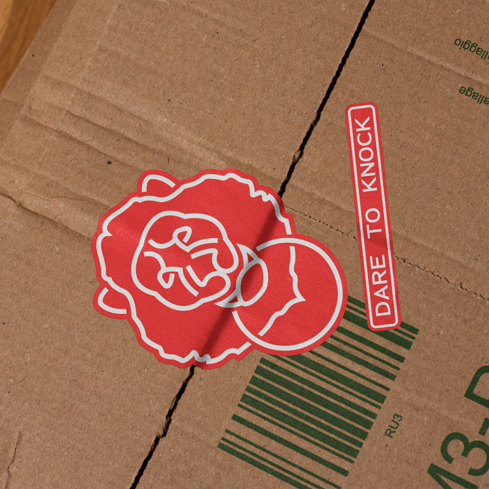
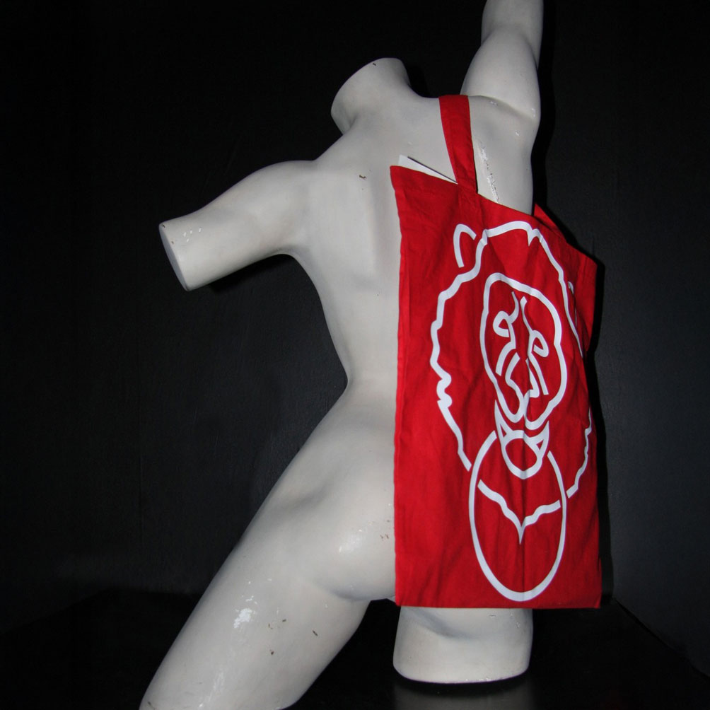
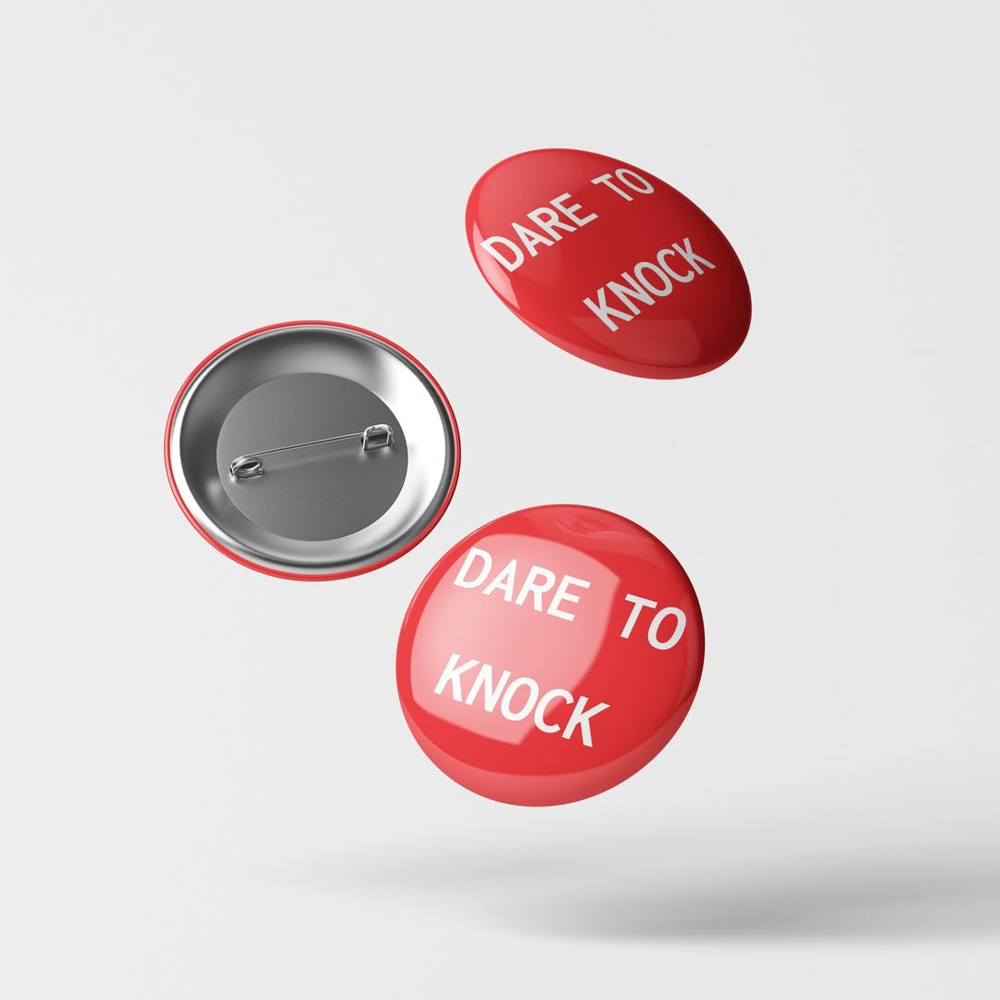
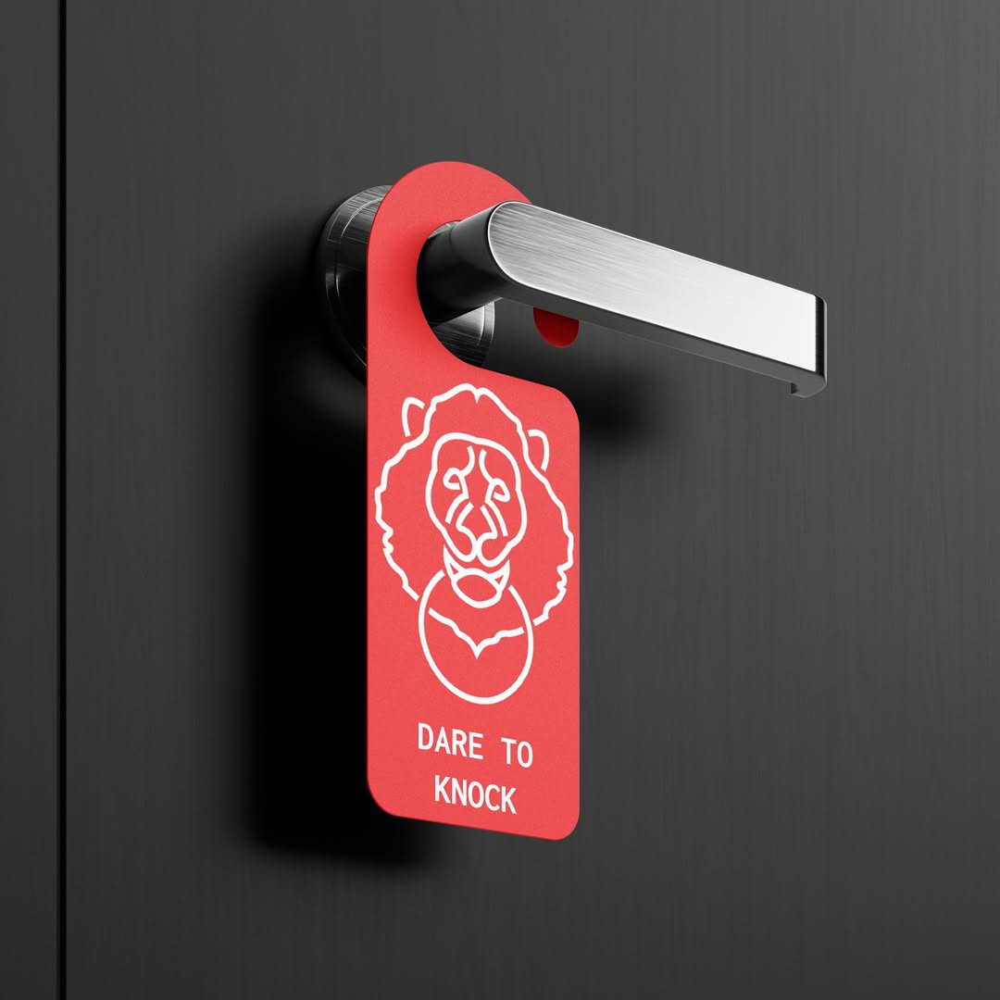

DARE TO KNOCK
School Project / Merchandise
In the dream, the subject finds themselves outside their home, gripped by an irresistible and inexplicable need to enter it.
However, they will encounter an insurmountable obstacle. The entrance is guarded by a seated lion.
Thus, the fundamental symbols, the lion and the door, are expressed in the form of a door knocker in the shape of a lion's head.
The red color of the background serves the purpose of conveying the emotions experienced by the individual when facing the lion.




© Queuek Design Studio, 2026, All rights reserved